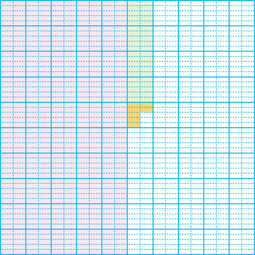

- 문제 1
- 문제 2
- 문제 3
- 문제 4
- 문제 5
- 문제 6
- 문제 7
- 문제 8
- 문제 9
- 문제 10
-
안에 알맞은 소수를 써넣으시오.
0.01 0.020.0121.53 1.541.537 -
전체 크기가 1인 모눈종이에 색칠된 부분의 크기를 소수로 나타내고 읽어 보시오.
0.547읽기영 점 오사칠 -
안에 알맞은 수를 써넣으시오.
1이 2개, 0.1이 3개, 0.001이 6개인 수는입니다.2.306 -
분수를 소수로 나타내 보시오.
＝- 8
- 1000
0.0082＝- 603
- 1000
2.603＝- 3004
- 1000
3.004 -
안에 알맞은 수를 써넣으시오.
-
1이 1개, 0.1이 5개, 0.01이 2개, 0.001이 3개인 수
1.523 -
1이 4개, 0.001이 59개인 수
4.059
-
-
소수를 읽어 보시오.
0.372읽기영 점 삼칠이5.126읽기오 점 일이육8.702읽기팔 점 칠영이 -
2가 나타내는 수를 써 보시오.
32.57220.1270.02 -
안에 알맞은 소수를 써넣으시오.
- 2.15
- 2.16
- 2.17
2.1562.171 -
안에 알맞은 수를 써넣으시오.
1.2571.2481.1581.2591.2681.3580.001 작은 수
0.01 작은 수
0.1 작은 수
0.001 큰 수
0.01 큰 수
0.1 큰 수
1.258 -
조건을 만족하는 소수를 쓰고 읽어 보시오.
-
소수 세 자리 수입니다.
-
9보다 크고 10보다 작습니다.
-
소수 첫째 자리 숫자는 8입니다.
-
소수 둘째 자리 숫자는 5입니다.
-
소수 셋째 자리 숫자는 9입니다.
쓰기9.859읽기구 점 팔오구 -